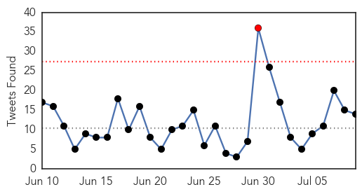
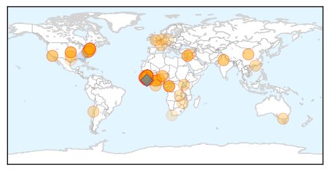
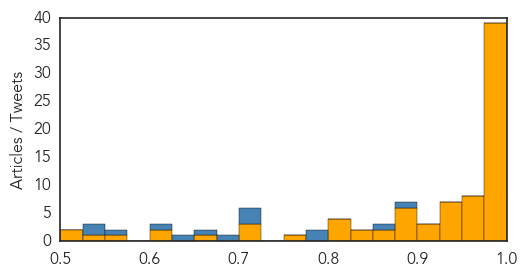
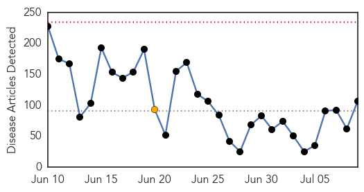

Ebola
30-Day Web Trend
0 alerts, 0 warnings

30-Day Twitter Trend
1 alerts, 0 warnings

Article Locations
Article Confidences
Top Articles:
- 1.000
- Liberia Confirms 2 More Ebola Cases, Bringing New Outbreak to 5
- 1.000
- Source of new Liberian Ebola outbreak a mystery
- 1.000
- Liberia announces two new Ebola cases
- 1.000
- Health Department
- 0.999
- Liberia announces two new Ebola cases
- 0.999
- Ebola crisis: Liberia’s new outbreak spreads
- 0.999
- Ebola eradication key: Parirenyatwa
- 0.999
- Liberia announces two new Ebola cases
- 0.999
- Lack of people, supplies and money plague Africa's Ebola
- 0.999
- Ebola recovery goals focus on rebuilding health systems
- 0.999
- Senegal closes border as "unprecedented" Ebola outbreak in Guinea spreads
- 0.999
- Death toll from Ebola in West Africa hits 887: WHO
- 0.999
- CDC commits to eliminating Ebola
- 0.999
- Ebola outbreak: Why has 'Big Pharma' failed deadly virus' victims?
- 0.998
- Ebola cases evade detection - lack of trust in communities
- 0.998
- With three new confirmed cases, Ebola officially returns to Liberia
- 0.997
- 16 test positive to Ebola in Guinea
- 0.997
- Doctor urges FG to take adequate precautionary measures against return of ebola
- 0.997
- Liberia records 2 new cases of disease amidst fears of another epidemic
- 0.996
- Lack Of People, Supplies And Money Plague Africa's Ebola Fight
- 0.996
- Ebola: Experts highlight problems in Sierra Leone
- 0.995
- Ebola-Hit Sierra Leone Extends Night-Time Curfew to 6am from 6pm Indefinitely
- 0.995
- Liberia announces two new Ebola cases
- 0.994
- Panel: Politics among reasons for botched UN Ebola response
- 0.993
- Panel: Politics among reasons for botched UN Ebola response
- 0.992
- WHO Not Fit To Deal With Global Health Emergencies, Says Independent Review Panel
- 0.992
- World Bank warns of rising maternal deaths post-Ebola
- 0.992
- Ebola: What my experience taught me (Opinion)
- 0.991
- Ebola panel urges sweeping changes at World Health Organisation
- 0.991
- Sierra Leone extends Ebola curfews indefinitely
- 0.990
- NJ Ebola Scare Confirmed To Be Malaria
- 0.990
- Details of US Ebola patient's route to Dalls from Liberia revealed
- 0.989
- New Ebola Infections Brings Number of Liberia Cases to 5
- 0.988
- WHO ‘unfit for health emergencies’
- 0.987
- Mugabe in New York for Ebola Summit
- 0.986
- Ebola Is Not Over and It's Proving Hard to Beat
- 0.985
- Obama says US military to help Ebola effort
- 0.980
- Source of new Liberian Ebola outbreak a mystery: WHO
- 0.975
- Stop Making Sense
- 0.972
- Dr. Yumkella Returns Home In 5 Weeks
- 0.970
- Ebola conference: Past recovery conferences show gloomy track record for disaster-hit countries - World
- 0.964
- West African Health Organisation Day observed
- 0.961
- Sierra Leone News : Health Minister Dr. Abu Bakarr Fofanah, appointed Founding Co-Chair of World Medicine Summit : Sierra Leone News
- 0.959
- The Great U.S. Polio Panic of 2015
- 0.952
- Loss Of Health Staff Could Increase Maternal Mortality In Ebola-Hit Countries: World Bank
- 0.951
- News in the Humanosphere: Maternal mortality rates to surge in Ebola-affected countries, says World Bank
- 0.951
- Experts Studied Ebola Response and Say World Health Organization Needs Major Reforms
- 0.945
- Ebola conference to generate funding and solidarity for West Africa
- 0.944
- Loss of health staff could increase maternal mortality in Ebola-hit countries: World Bank
- 0.944
- Loss of health staff could increase maternal mortality in Ebola-hit countries: World Bank
Showing top 50 articles...
Top Tweets:
- 0.885
- Undefeated By The Ebola Outbreak Chid Liberty's Campaign Helps Liberia's ... - Madame Noire http://t.co/JPUpf1GZQ6 ebola EVD
- 0.871
- Liberia Finance Minister explains Ebola recovery plan aligns with pre-Ebola dev plans. @TackleEbola EbolaResponse
- 0.798
- 16 test positive to Ebola in Guinea - TheCable http://t.co/5OLk4rm3Jj ebola EVD
- 0.790
- Ebola vaccine trials not harmful – Experts - GhanaWeb http://t.co/gAFjk6HeX6 ebola EVD
- 0.724
- We are fighting Ebola for the whole world not only the region - Dr. Walter Gwenigale Liberia Health Minister EbolaResponse
- 0.710
- Lack of people supplies and money plague Africa's Ebola fight: experts - Yahoo News http://t.co/6fJ2mod4js ebola EVD
- 0.706
- Mugabe in New York for Ebola Summit - Nehanda Radio http://t.co/V33vi2Zo1V ebola EVD
- 0.683
- Some $3.2 billion needed for Ebola recovery efforts in Guinea Liberia and ... - UN News Centre http://t.co/d9PrCOBV6w ebola EVD
- 0.662
- On the RoadtoZero CDC staff reached remote parts of West Africa to help control the spread of Ebola. http://t.co/INVl2qQQnE
- 0.629
- New Jersey Neighborhood Quarantined After Possible Ebola Patient Discovered ... - The Ocean Signal http://t.co/vK4MPOKCgk ebola EVD
- 0.606
- One of the weaknesses since the beginning of Ebola has been a lack of communication. -Guinea Minister of Health EbolaForum2015
- 0.560
- Refugee Union blasts Tsang for racist comments likens ebola to SARS - Coconuts Hong Kong http://t.co/s7HKFQ7ztA ebola EVD
- 0.547
- Stay tuned from more live-tweeting from today's Ebola Forum! @PCIMediaImpact
- 0.534
- Liberia Confirms 2 More Ebola Cases Bringing New Outbreak to 5 - Bloomberg http://t.co/NVtWOYOB8S
Unknown
30-Day Web Trend
0 alerts, 1 warnings

30-Day Twitter Trend
0 alerts, 0 warnings

Article Locations

Article Confidences

Top Articles:
- 0.997
- (LEAD) S. Korea's MERS death toll stays flat with no new cases
- 0.992
- Spike in Canberra flu cases
- 0.985
- New group of Clint students, staff tested for tuberculosis
- 0.985
- First MERS Death After 8 Days; Toll Reaches 34
- 0.978
- A 'hidden epidemic' in the US has ballooned into a public health fiasco -- and no solutions are in sight
- 0.975
- How not to get the flu this season
- 0.966
- Lyme disease caused by ticks may cost $1.3 billion a year
- 0.965
- Flu season is here and it's time to vaccinate
- 0.963
- To fight off a potential Mers virus outbreak, health and government officials must be totally honest
- 0.950
- Rash illness, commonly affecting children, spreading in Tokyo
- 0.945
- HEALTH MINISTRY ADVISES PUBLIC ON CHICKENPOX
- 0.917
- Vomiting bug from Asia spreading globally, threatens wave of gastrointestinal outbreaks, World News & Top Stories
- 0.917
- Chicago Tribune
- 0.917
- Chicago Tribune
- 0.917
- Chicago Tribune
- 0.917
- Chicago Tribune
- 0.917
- Chicago Tribune
- 0.917
- Chicago Tribune
- 0.917
- Chicago Tribune
- 0.917
- Chicago Tribune
- 0.917
- Chicago Tribune
- 0.917
- Chicago Tribune
- 0.917
- Chicago Tribune
- 0.917
- Chicago Tribune
- 0.917
- Chicago Tribune
- 0.917
- Chicago Tribune
- 0.917
- Chicago Tribune
- 0.917
- Chicago Tribune
- 0.917
- Chicago Tribune
- 0.917
- Chicago Tribune
- 0.917
- Chicago Tribune
- 0.917
- Chicago Tribune
- 0.917
- Chicago Tribune
- 0.910
- The world windows to Thailand
- 0.902
- Warming Weather Causing Uptick In Lyme Disease From Ticks
- 0.885
- Leptospirosis Case: Two more deaths, toll reaches 14
- 0.871
- No Swimming: Health Risks Associated with Floodwaters
- 0.866
- White House urges end to conflict in South Sudan
- 0.855
- Install epidemics system
- 0.848
- DOH admits lack of equipment to detect MERS in passengers entering Zamboanga seaport
- 0.847
- More TB Testing Ordered in Texas Border City School
- 0.845
- Masvingo blames vendors for typhoid
- 0.787
- ERF provided healthcare services through strengthened static centres and mobile outreach - Pakistan
- 0.780
- Unicef warns of child deaths in North Korea drought, East Asia News & Top Stories
- 0.776
- UNICEF warns of child deaths in North Korea drought
- 0.775
- Making Patients Pay for Drugs Could Breed Superbugs
- 0.775
- Has deadly water amoeba found a home in Minnesota?
- 0.774
- Tracking Cyclospora in Travis County - Story
- 0.772
- Year's 1st Japanese encephalitis case confirmed in Kaohsiung
- 0.765
- Water measures in place at health facilities – Health Ministry
Showing top 50 articles...
Top Tweets:
-
No tweets found for Jul 09, 2015